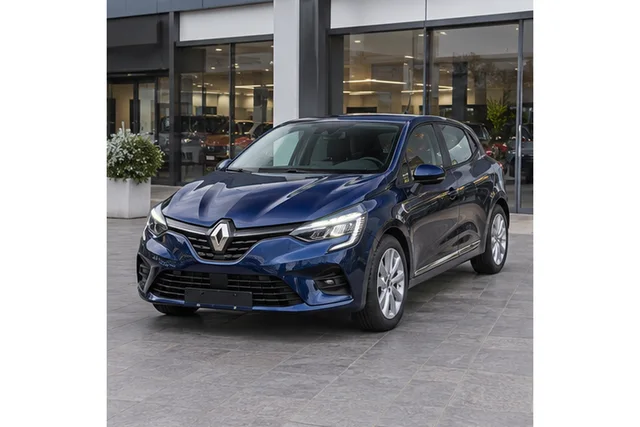
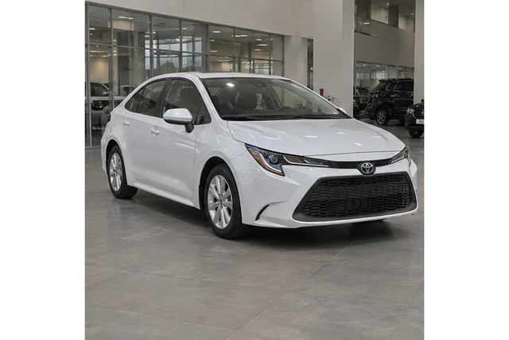
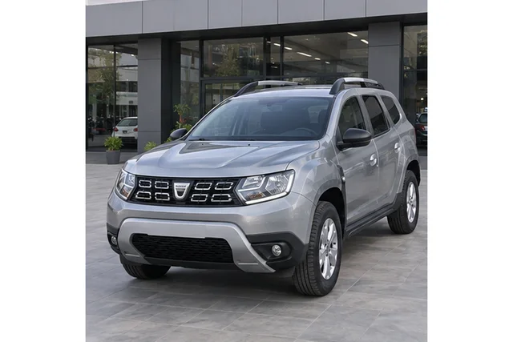
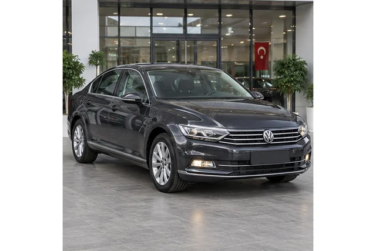
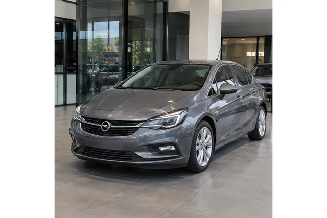
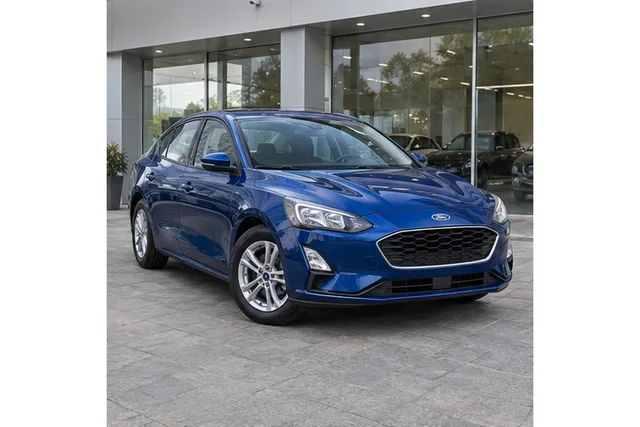
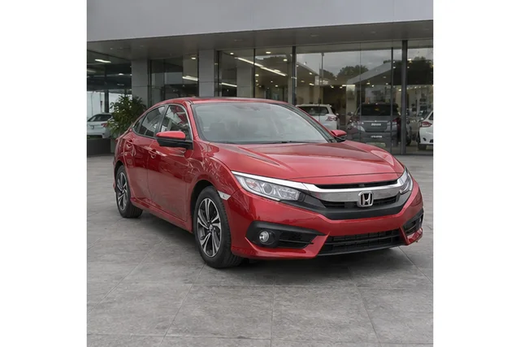
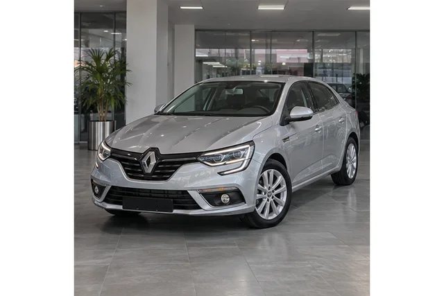

Ekonomik
EkonomikAraçlarımız
Size Uygun Aracı Bulun
İkinci el otomobil örnek ilanlarını filtreleyerek inceleyin.
Bu sayfa portföy ve ders projesi için hazırlanmıştır. İlanlar ve fiyatlar gerçek değildir.
Araçlar yükleniyor...
Ekonomik
Düşük Km
Öne Çıkan
SUV
Konfor
Fırsat
Yeni İlan Popüler
Popüler
Prestij
Şık Tasarım